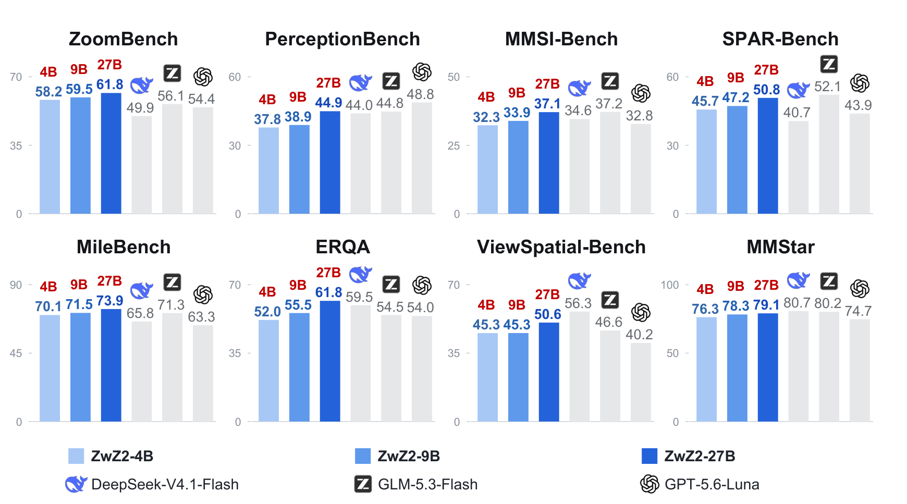
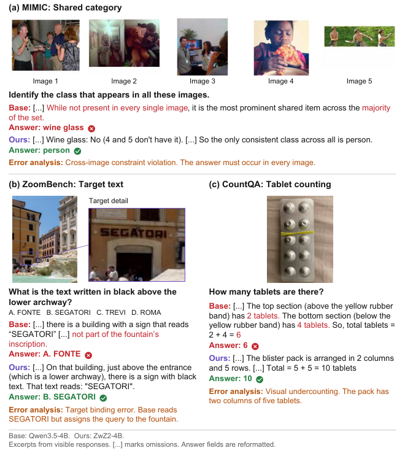

ZwZ2：裁剪用于造题，策略仍然看整图
一手资料与首次公开日
- 🤗 27B Model Card、9B、4B：三份原卡分别保存在本目录
src/。 - 📄 Tech Report PDF链接；本次实际阅读HTML与离线报告阅读版。
- 🧩 官方源码、数据集、数据构造README。
- 📅 Initial release不可变提交：2026-10-26 11:27:52 UTC已公开命名4B/9B/27B family与训练方法。报告v1于10月27日提交，后续GGUF不是新的正代。
Atlas采用2026-10-26作为首次官方公开材料日期，而不拿10/30新GGUF出现日或HF lastModified当首发。4B/9B基于Qwen3.5，27B基于Qwen3.6-27B；三者共用数据与方法，放Ant / inclusionAI的Vision Reasoning支线。

为什么光有局部高分辨率还不够
单个对象能被清晰识别，并不代表模型会把不同区域的数量、关系和约束合并。一个题目可以由多区域比较、计数聚合、依赖链推理构成；若答案其实只需读其中一个区域，“多区域”仅是版面装饰，训练不到证据连接。
ZwZ2把两个问题分开检验：完整证据能不能稳定给出答案；拿掉某区域后答案是否仍可恢复。前者约束标签可靠性，后者约束证据需求。裁剪只给构造器和审查器，最终策略并不获得privileged crops。

EvidenceConnect的实际构造流程
从图像到区域组
唯一图像来源为SA-1B。先筛长边至少1280、熵至少6.5、边缘密度至少0.04、亮度标准差至少60的图，再提出最多18个候选区域。区域面积约占整图0.04%—18%，IoU小于0.65；不足4个候选时跳过。每次取3—7区域，最多6组。
原生裁剪外扩8%边距，按原有相对位置排列，过大组合长边缩到4096。彩色框同时标在裁剪与整图上，用来维持区域身份。问题生成器Qwen3.5-397B-A17B工作在non-thinking模式，从22类任务、四种necessity模式中取样；104模板库每组取4个，再允许最多4个自由生成槽，最多8候选。
先锚定答案，再审计冗余
Qwen3.5-397B与Kimi-K2.6各采样4次，要求每个family至少3/4同答案，必要时由GLM5.2做文本等价判断。回答审查器不获得生成器预填答案与区域描述，避免直接复述标签。
随后逐区灰遮挡/红叉，最多3次回答；至少2/3仍恢复原答案，则该区域经验上冗余。实际规则是冗余区域达到2个才拒绝题目，允许单个区域因重叠/噪声被判断为冗余。因此不能把摘要“缺任一区域就不能回答”的理想叙述写成最终数据集严格保证。
回到完整图像与策略难度
最终策略接收完整图像，通常保留彩框。部分聚合题经四次整图审核（两个family各两次）均得到唯一、等价且有依据的答案后，可以移除框。四个选项保持同类格式并随机排序，避免只凭答案形式猜中。
难度评估器Qwen3.6-35B-A3B对整图做4次尝试：全对的容易题排除，任何不可解析结果也排除；0/4的高难题可保留，因为大教师已锚定标签。这里区分“弱策略答不出”和“问题没有可信答案”。

数据分布与训练配方
最终20.4K例共用于三个尺度，无额外SFT。3区域占65.74%、4区域24.34%、5区域7.93%，6/7区域共1.99%；难与很难超过44%。多数样本仍是三四区域，不应宣传成普遍七区域长链。
| 论文配方 | 原始说明 |
|---|---|
| 算法 | GRPO，四选一准确率reward |
| 训练 | 2 epochs；batch128；LR1e-6 |
| 采样 | 每题8 rollouts；temperature0.7 |
| 长度 | 最大响应32K；non-thinking发布模板 |
| 更新 | clip low0.2/high0.3；无KL项 |
| 尺度 | 4B、9B、27B，共用20.4K数据 |
原脚本以.sh.txt保存用于阅读，没有执行或安装模型。发布的GGUF是同family量化分发，推理精度可能影响效果，不能以其上线日再添正代叶子。
25项评测：平均改善不等于每项领先所有对手
评测覆盖六类领域，Overall按25 benchmark等权平均，不是先按六类等权。三个尺度在各25项上都优于各自基座，但这与“每项超过最大模型”是两回事。
| 同尺度 | 基座均分 | ZwZ2均分 | 由展示数值计算的提升 |
|---|---|---|---|
| 4B | 49.41 | 54.79 | +5.38；正文5.39存在舍入差异 |
| 9B | 51.63 | 56.59 | +4.96 |
| 27B | 55.52 | 60.51 | +4.99 |
4B ViewSpatial37.43→45.26，MileBench60.08→70.08，是明显的迁移提升。27B仍有清晰弱项：AgentVista18.18低于GPT-5.6-Luna21.53和GLM5.3Flash22.01；BabyVision28.35低于表中DeepSeek45.88；MMLongBench*76.73低于GLM83.15。比较中还存在平台输入分辨率限制、低/不思考配置，应固定协议再谈模型能力上限。

MMLongBench带星号，是V-RAG、ImageMM-NIAH、VH-Multi等视觉核心的25个非Counting任务，不是完整原benchmark。视频和长文档提升属于迁移结果，构造过程没有专门提供时序或跨帧训练，不能改称视频基模或世界模型。
消融与注意力：支持什么，不支持什么
7K受控子集消融均分：基座47.16，无privileged views51.38，无drop-one51.03，完整52.65。两组件在该平均上有效，但并非处处正贡献：ERQA完整47.50，去掉drop-one51.50。正文1.63与展示52.65−51.03=1.62也有舍入差异，保留展示精度。
与原ZwZ等数据基线的比较不是等样本量：原ZwZ约73K，EvidenceConnect20.4K，11项均分49.86与53.86；MileBench70.21对70.08却略有回退。数据效率是有价值线索，不能把样本量/recipe差异当作单组件因果证据。
注意力分析用405个TreeBench样本，8个full-attention层（4、8直到32），取生成前最后输入token的注意力，先head平均、再对图像token归一化。top-k区域集合大小等于证据token数，计算IoU；4B有7/8层、9B6/8层提高。它说明表示与证据位置更对齐，不证明模型因这些位置而答对。若要证因果，应固定问题做证据替换/遮挡与非证据对照，不只画热图。

对Agent Training与数据构造的启发
可比较答案锚定、drop-one、难度过滤的单独与联合效果，保留被门禁拒绝的分布。训练时分别看成功率与实际证据调用，避免模型学会彩框或选项格式而非证据关系。代码与论文配置有冲突时先取得实际run命令，再做同预算复现，不能用默认脚本失败判断论文错误。
关联与产物
- Youtu-Parsing-Omni：先保留可定位证据，再区分结构合法与内容正确。
- WeVisCut：特权监督如何转成真实受限状态中的策略训练。
- 中文Poster；原始来源清单。